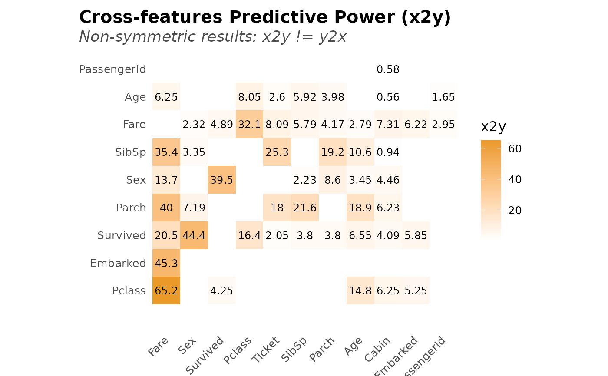

The relative reduction in error when we go from a baseline model
(average for continuous and most frequent for categorical features) to
a predictive model, can measure the strength of the relationship between
two features. In other words, x2y measures the ability of x
to predict y. We use CART (Classification And Regression Trees) models
to be able to 1) compare numerical and non-numerical features, 2) detect
non-linear relationships, and 3) because they are easy/quick to train.
Usage
x2y(
df,
target = NULL,
symmetric = FALSE,
target_x = FALSE,
target_y = FALSE,
plot = FALSE,
top = 20,
quiet = "auto",
ohse = FALSE,
corr = FALSE,
...
)
x2y_metric(x, y, confidence = FALSE, bootstraps = 20, max_cat = 20)
# S3 method for x2y_preds
plot(x, corr = FALSE, ...)
# S3 method for x2y
plot(x, type = 1, ...)
x2y_preds(x, y, max_cat = 10)Arguments
- df
data.frame. Note that variables with no variance will be ignored.
- target
Character vector. If you are only interested in the
x2yvalues between particular variable(s) indf, set name(s) of the variable(s) you are interested in. KeepNULLto calculate for every variable (column). Checktarget_xandtarget_yparameters as well.- symmetric
Boolean.
x2ymetric is not symmetric with respect toxandy. The extent to whichxcan predictycan be different from the extent to whichycan predictx. Setsymmetric=TRUEif you wish to average both numbers.- target_x, target_y
Boolean. Force target features to be part of
xORy?- plot
Boolean. Return a plot? If not, only a data.frame with calculated results will be returned.
- top
Integer. Show/plot only top N predictive cross-features. Set to
NULLto return all.- quiet
Boolean. Keep quiet? If not, show progress bar.
- ohse
Boolean. Use
lares::ohse()to pre-process the data?- corr
Boolean. Add correlation and pvalue data to compare with? For more custom studies, use
lares::corr_cross()directly.- ...
Additional parameters passed to
x2y_metric()- x, y
Vectors. Categorical or numerical vectors of same length.
- confidence
Boolean. Calculate 95% confidence intervals estimated with N
bootstraps.- bootstraps
Integer. If
confidence=TRUE, how many bootstraps? The more iterations we run the more precise the confidence internal will be.- max_cat
Integer. Maximum number of unique
xoryvalues when categorical. Will select then most frequent values and the rest will be passed as"".- type
Integer. Plot type:
1for tile plot,2for ranked bar plot.
Details
This x2y metric is based on Rama Ramakrishnan's
post: An Alternative to the Correlation
Coefficient That Works For Numeric and Categorical Variables. This analysis
complements our lares::corr_cross() output.
Examples
# \donttest{
data(dft) # Titanic dataset
x2y_results <- x2y(dft, quiet = TRUE, max_cat = 10, top = NULL)
head(x2y_results, 10)
#> # A tibble: 10 × 4
#> x y obs_p x2y
#> <chr> <chr> <dbl> <dbl>
#> 1 Fare Pclass 100 65.2
#> 2 Fare Embarked 100 45.3
#> 3 Sex Survived 100 44.4
#> 4 Fare Parch 100 40.0
#> 5 Survived Sex 100 39.5
#> 6 Fare SibSp 100 35.4
#> 7 Pclass Fare 100 32.1
#> 8 Ticket SibSp 100 25.3
#> 9 SibSp Parch 100 21.6
#> 10 Fare Survived 100 20.5
plot(x2y_results, type = 2)

# Confidence intervals with 10 bootstrap iterations
x2y(dft,
target = c("Survived", "Age"),
confidence = TRUE, bootstraps = 10, top = 8
)
#> # A tibble: 8 × 6
#> x y obs_p x2y lower_ci upper_ci
#> <chr> <chr> <dbl> <dbl> <dbl> <dbl>
#> 1 Sex Survived 100 44.4 35.2 48.1
#> 2 Survived Sex 100 39.5 33.6 45.8
#> 3 Fare Survived 100 20.5 -6.4 17.0
#> 4 Age Parch 80.1 18.9 12.8 21.4
#> 5 Pclass Survived 100 16.4 11.9 24.5
#> 6 Age Pclass 80.1 14.8 7.57 15.3
#> 7 Age SibSp 80.1 10.6 3.5 12.4
#> 8 Cabin Survived 100 8.19 5.95 10.5
# Compare with mean absolute correlations
x2y(dft, "Fare", corr = TRUE, top = 6, target_x = TRUE)
#> # A tibble: 6 × 6
#> x y obs_p x2y mean_abs_corr mean_pvalue
#> <chr> <chr> <dbl> <dbl> <dbl> <dbl>
#> 1 Fare Pclass 100 65.2 0.375 1.30e- 4
#> 2 Fare Embarked 100 45.3 0.150 4.35e- 2
#> 3 Fare Parch 100 40.0 0.216 6.92e-11
#> 4 Fare SibSp 100 35.4 0.160 1.67e- 6
#> 5 Fare Survived 100 20.5 0.257 6.12e-15
#> 6 Fare Sex 100 13.7 0.182 4.23e- 8
# Plot (symmetric) results
symm <- x2y(dft, target = "Survived", symmetric = TRUE)
plot(symm, type = 1)
 # Symmetry: x2y vs y2x
on.exit(set.seed(42))
x <- seq(-1, 1, 0.01)
y <- sqrt(1 - x^2) + rnorm(length(x), mean = 0, sd = 0.05)
# Knowing x reduces the uncertainty about the value of y a lot more than
# knowing y reduces the uncertainty about the value of x. Note correlation.
plot(x2y_preds(x, y), corr = TRUE)
# Symmetry: x2y vs y2x
on.exit(set.seed(42))
x <- seq(-1, 1, 0.01)
y <- sqrt(1 - x^2) + rnorm(length(x), mean = 0, sd = 0.05)
# Knowing x reduces the uncertainty about the value of y a lot more than
# knowing y reduces the uncertainty about the value of x. Note correlation.
plot(x2y_preds(x, y), corr = TRUE)
 plot(x2y_preds(y, x), corr = TRUE)
plot(x2y_preds(y, x), corr = TRUE)
 # }
# }